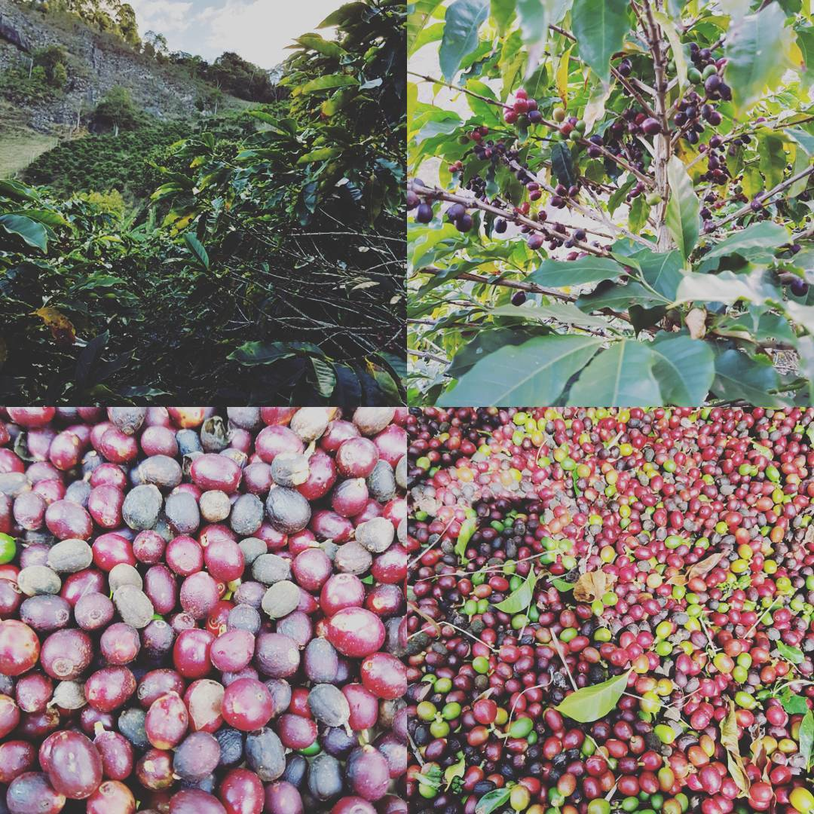
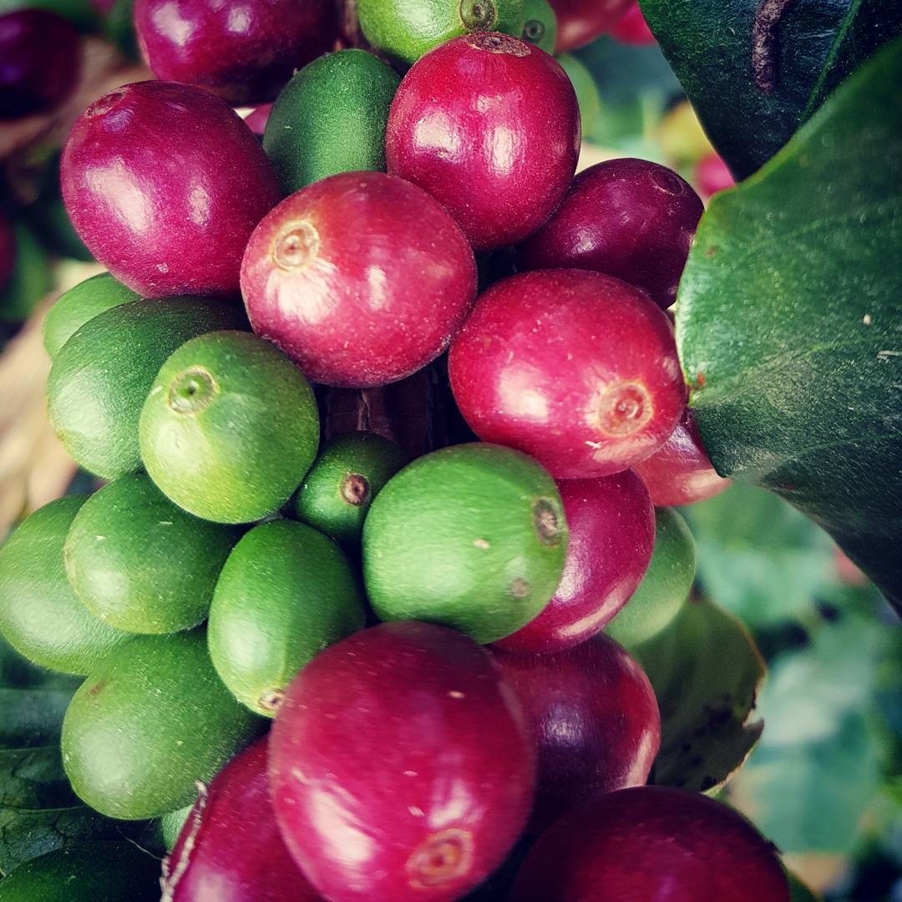
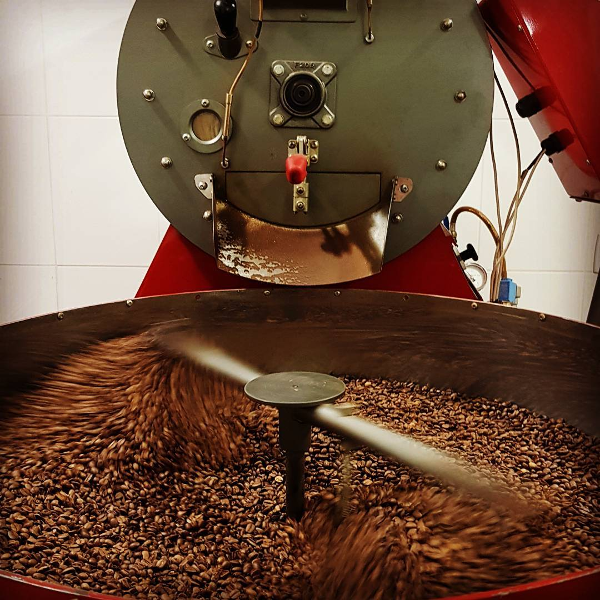
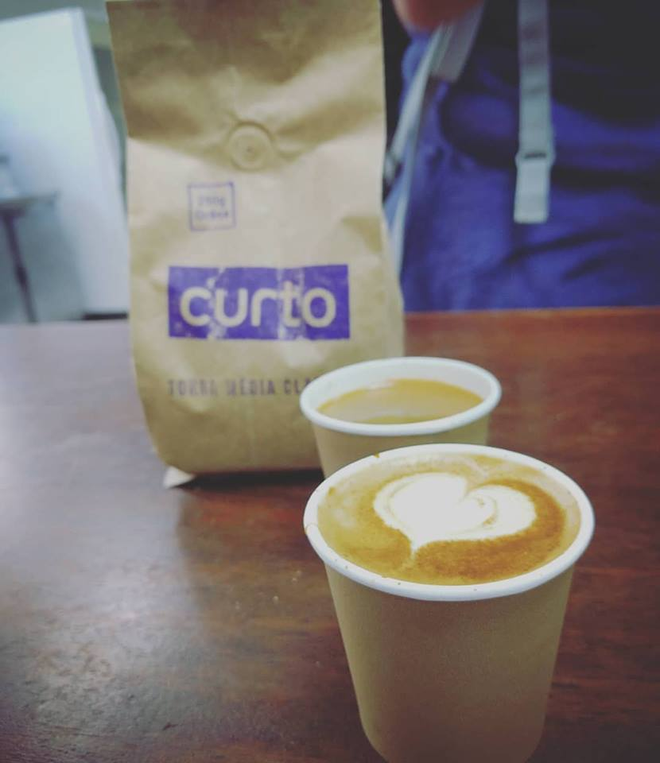

Roasting Coffee with Python
Turicas aka Álvaro Justen
PyCon 2018 Lightning Talks
May 12th 2018 - Cleveland, OH - USA
$ whoami
Turicas, nice to meet you =)
¡Síganme los buenos!
{twitter,
github,
youtube,
slideshare,
instagram}
/turicas
turicas@pythonic.cafe
From nature...

The Fruit

The beans!

Roasting
12kg machine

Extracting
Drinking 

Automation: Roasting with Python!
- Collect data from temperature and other sensors
- Log everything
- Control the gas flow
- Open/close doors
- Reproduce any roast profile you want
bit.ly/roast-coffee-python
github/turicas/carmomaq